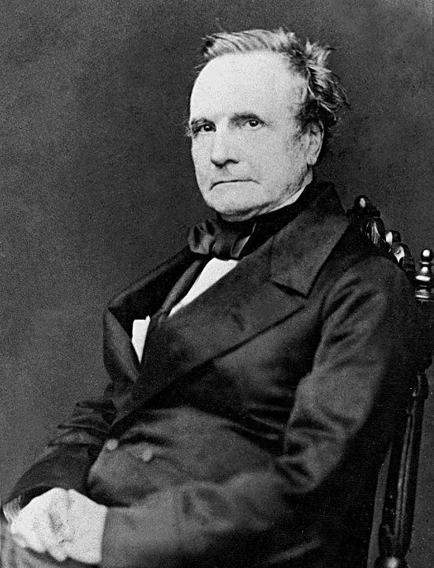

1791 - 1871 Charles Babbage Charles Babbage (1791-1871) est un mathématicien, inventeur et ingénieur britannique, souvent considéré comme le "père de l'ordinateur". Bien qu'il n'ait jamais terminé la construction complète de cette machine de son vivant, ses idées ont profondément influencé le développement de l'informatique.
Contexte historique Au début du XIXe siècle, les calculs mathématiques étaient effectués manuellement, ce qui entraînait de nombreuses erreurs. Babbage, mathématicien britannique, avait déjà conçu la machine à différences pour automatiser ces calculs. Cependant, il envisagea une machine plus avancée : la machine analytique, capable de réaliser des opérations complexes et d'être programmée.
Architecture et fonctionnement La machine analytique est constituée de 2 parties, le moulin (ou Mill en anglais) et le magasin (ou store en anglais). Le moulin est là où sont exécutés les calculs, c'est l'unité de calcul (équivalent du processeur), et le magasin est l'endroit où sont stockées les constantes et les variables (équivalent de la mémoire). Les cartes perforées ont differents roles dans cette machine, il en existe 3 types:
Le role d'Ada Lovelace Ada Lovelace, mathématicienne britannique et fille du célèbre Lord Byron, a collaboré avec Babbage sur la machine analytique. Elle a rédigé des notes détaillées sur son fonctionnement, en particulier la note G qui est généralement admise comme étant le premier algorithme destiné à être exécuté par une machine, faisant d'elle la première “programmeuse” de l'histoire. Cet algorithme a été originellement conçu pour calculer les nombres de Bernoulli.
Une polémique financière Une polémique majeure autour de la machine de Babbage concerne l'abandon de son financement par le gouvernement britannique dans les années 1840. Bien qu’il ait reçu des fonds importants pour construire sa machine différentielle, Babbage modifia constamment ses plans, préférant concevoir une machine encore plus ambitieuse. Le gouvernement, frustré par l’absence de résultats concrets, lui retira son soutien, ce que Babbage dénonça comme un manque de vision. L’affaire entraînera des débats : certains voyaient en lui un génie incompris, d’autres un inventeur imprudent.
Réalisation et héritage Bien que Babbage n'ait jamais achevé la construction complète de la machine analytique, son fils Henry a réussi à assembler partiellement certaines parties, notamment le moulin et l'imprimante, entre 1880 et 90. Ces composants sont aujourd'hui exposés au Science Museum de Londres. La machine analytique a jeté les bases de l'informatique moderne, influençant des concepts tels que la programmation, la mémoire et l'architecture des ordinateurs.
Conclusion La machine analytique de Charles Babbage représente une avancée majeure dans l'histoire de l'informatique. Elle incarne la transition entre les calculs manuels et les machines programmables, préfigurant les ordinateurs que nous utilisons aujourd'hui. L'œuvre de Babbage, enrichie par les contributions d'Ada Lovelace, demeure une source d'inspiration pour les scientifiques et les ingénieurs.